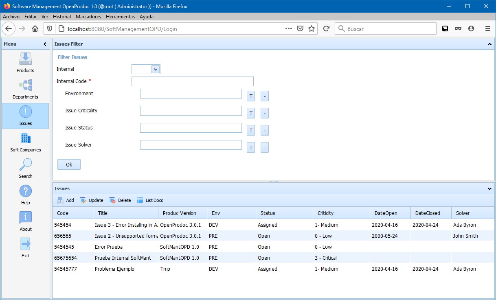

Help SMO Issues
This option displays ALL the issues (whatever their product and version) limited by the permissions of the current user. From this form it's possible to create, update or delete Issues.
Altough it is possible to manage the issues from the product version form, this list allows to manage them gfrom one point alone.
With the default configuration, the filter area of the issues will show six filters:
- Internal: Filter by issues of internal or external products.
- Internal Code: Filter by internal code of Issue.
- Environment: Filter by Environment in which the error ocurred
- Status: Filter by one of the possible status defined (pending, solved, assigned, waiting,..)
- Criticity: Filter by one of the possible levels of criticity defined (Critical, non blocking,..
- Technical Assigned: Filter by Technical who is analizing and solving the issue
With the default configuration, the list area display the columns:
- Internal Issue Code: Internal unique Code/Identifier of the Issue
- Title: Short description of the issue
- Environment: Environment in which the error ocurred
- Status: One of the possible status defined (pending, solved, assigned, waiting,..)
- Criticity: One of the possible levels of criticity defined (Critical, non blocking,..
- Date Open: Date in which the Issue was open
- Date Closed: Date in which the Issue was vlosed
- Technical Assigned: Technical who is analizing and solving the issue
Selecting an Issue, and always if the security permissions asigned allow it, it is possible to use the options:
- Add: Displays a form for adding a new issue to a product.
- Update: Displays a form for updating the selected issue.
- Delete: Displays a form for confirmation before deleting the selected issue and ALL its folders and documents.
- List Documents: Displays a form for maintenance of all the documents and folders structure under the selected department.

In SMO Tree there is a complete view of operations and forms.